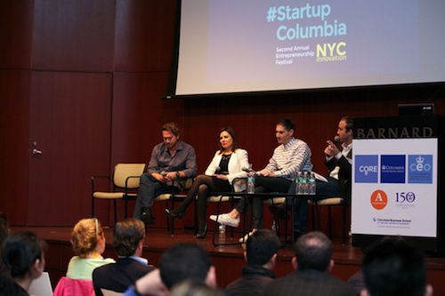
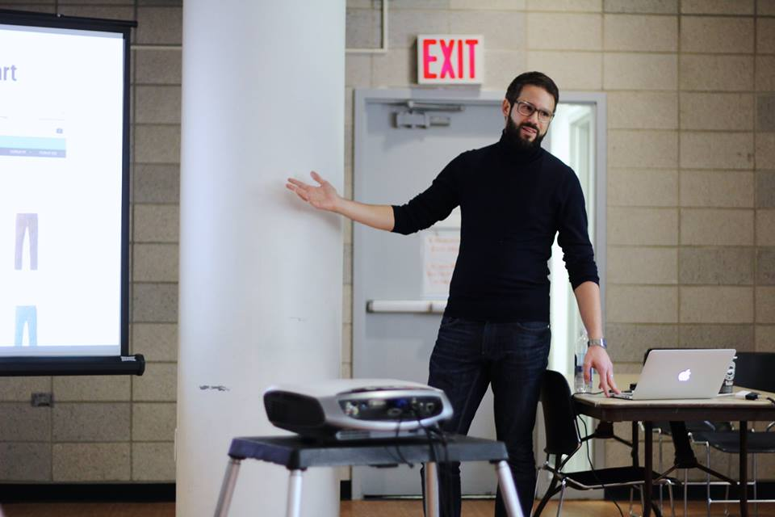
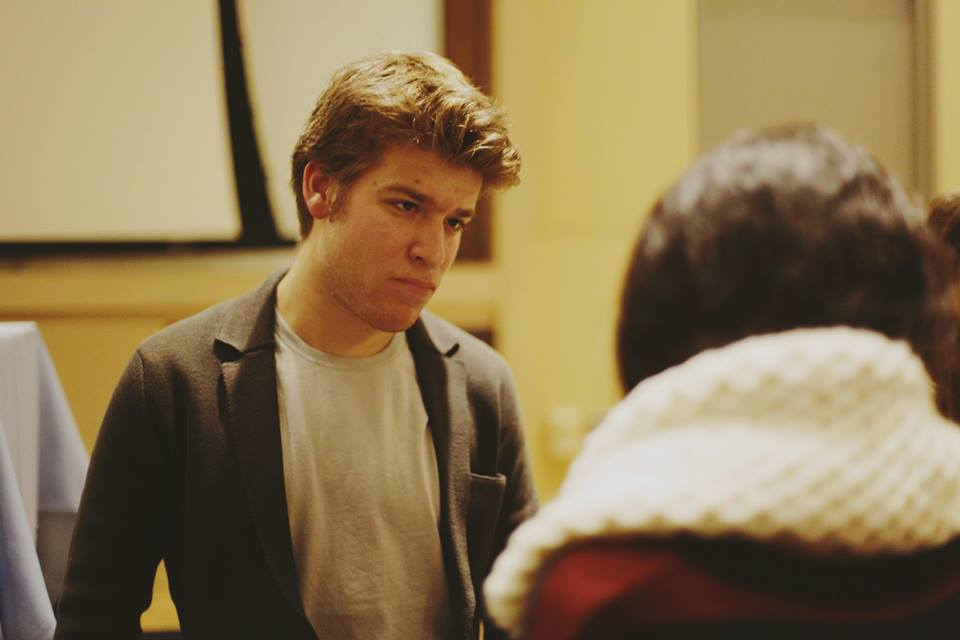
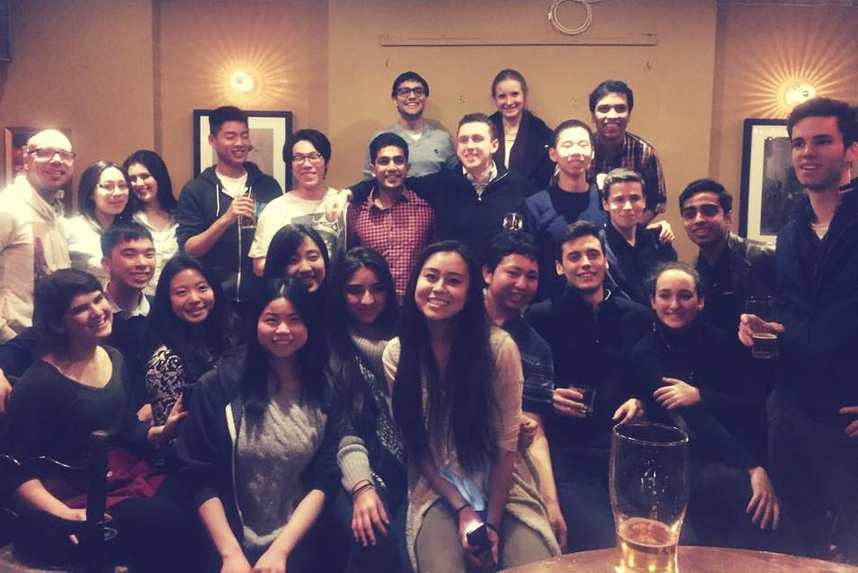
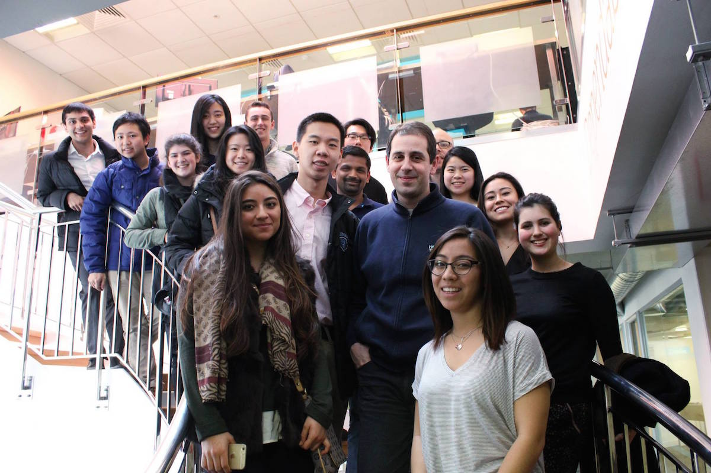
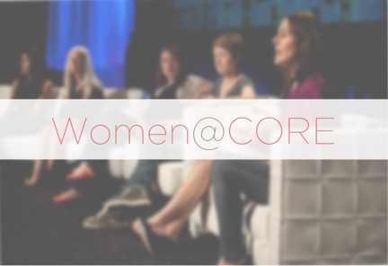

#StartupColumbia is an annual entrepreneurship festival held in the spring, coordinated by Columbia Entreprenership, CEO from the Columbia Business School, and CORE. The day-long event brings in speakers, alumni, and current students in a celebration of entrepreneurship. The festival also marks the conclusion of the Columbia Venture Competition, an annual $250,000 competition for Columbia students and young alums.

Almaworks is our first student accelerator for entrepreneurs in New York City. We take no equity and aim to help early-stage startups run by student entrepreneurs achieve significant, sustainable growth.

Startup Socials are biweekly events that embody the entrepreneurial spirit of our community. We have current undergraduates, masters and MBA students, and leading startup founders and venture capitalists from the city together in conversation. It allows everyone to just hang out and get to know each other or share ideas.

For CORE's tech treks, students travel to a major tech hub around the world and explore that city’s tech scene by meeting with entrepreneurs and venture capitalists. We've visited Silicon Valley, London, and Paris. Companies we toured included VC firms like Accel Partners and Andreessen Horowitz, accelerators like NUMA, and tech powerhouses like Google, Facebook, and Palantir.

CORE and ADI's JADE winter program is an immersive week-long program in New York City! A small group of students will be immersed in the startup world of NYC and learn about entrepreneurship through visits with startups all shapes and sizes, talks with founders, and fun adventures throughout the city.

The only dedicated program for female entrepreneurs at Columbia University, Women@CORE matches highly motivated women who are passionate about entrepreneurship with successful female entrepreneurs in New York City. We have also hosted panels in the past such as "Women Leaders in Entrepreneurship" and "Women in Unconventional Industries."